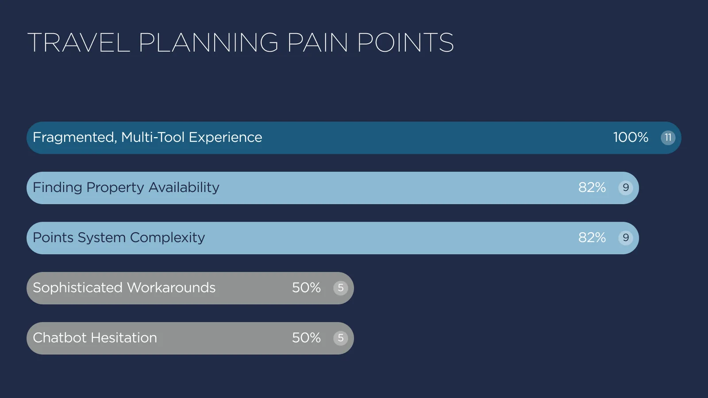
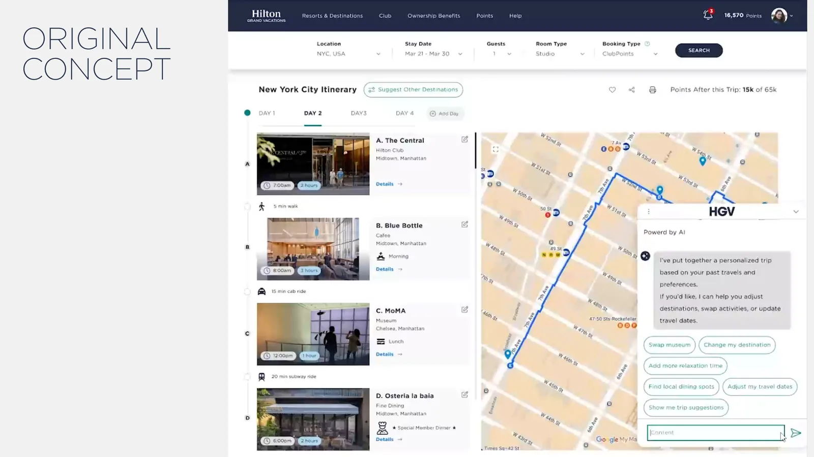
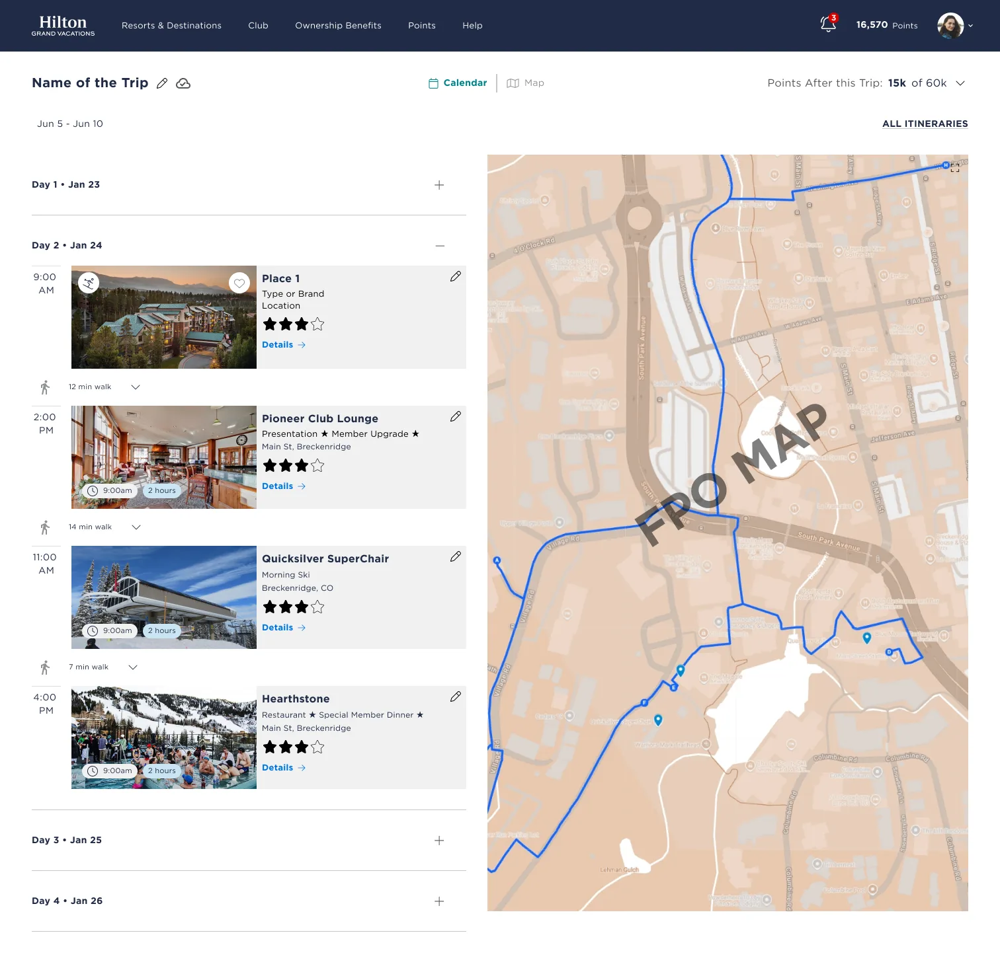
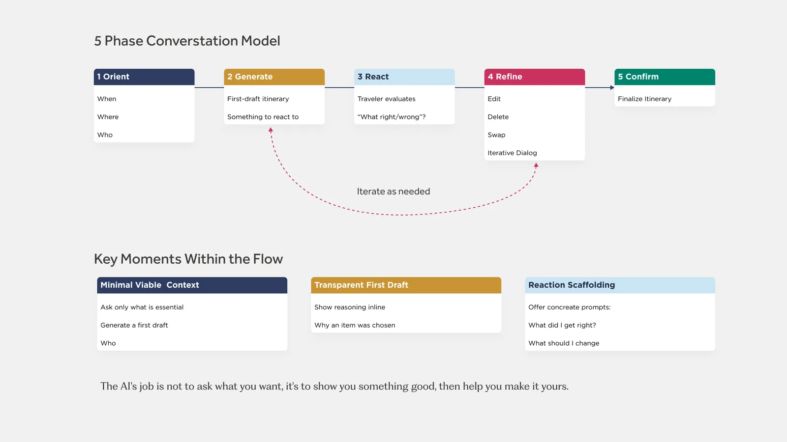

Role: Design lead · Hilton Grand Vacations · 2025 – present
Partners: Data Science, Engineering, Product
Methods: Interviews, concept testing, cognitive walkthroughs, prototyping
A familiar stress
It's 11:58 PM. Lyn, one of our research personas, is waiting for the booking window to open so she can grab a week in Breckenridge before it's gone. Once she books, she leaves HGV to plan the actual trip.
We interviewed 11 owners and 3 agents. Every owner planned across four or five tools: TripAdvisor, Google Flights, spreadsheets, TikTok. Most struggled to find availability and to understand their points. Half had built elaborate workarounds, and half were wary of chatbots.

"I need one place to handle all the things, instead of four or five sites. I could just go to one and it's the one that I'm an owner of." Owner interview
What owners reacted to
Before we talked to owners, I ran a cognitive walkthrough of TripAdvisor's AI trip planner as a first-time, less technical traveler. Its setup flow builds confidence. Editing after generation is brittle: saving, customizing, and sharing are hard to find, inconsistent, and sometimes destructive. We wanted that contrast to shape our build.
We then showed owners a concept: a finished, personalized itinerary with no form to fill in first. Every one of them reacted positively. "I love this already," one said the moment the screen appeared. Nobody asked for a wizard.

That set the hypothesis for everything that followed. People struggle to describe their preferences in the abstract. Show them a concrete draft and they know right away what's wrong with it.
The bet: three systems, one experience
Three teams were each building a piece. On their own, none of them was a product. I framed the work around one model so every team could see where its piece fit:
| Piece | Its job | In one line |
|---|---|---|
| Recommendation engine | Decides what to suggest | The engine knows the owner |
| Itinerary canvas | Shows where everything lands over time | The canvas holds the plan |
| Chatbot | Helps the owner shape the plan | The chatbot is the copilot |
The owner flies the plan. The copilot drafts, suggests, and edits, but it doesn't take over. That framing settled two arguments early. We would lead with automated generation and move the step-by-step wizard to the backlog. And because half of owners distrust chatbots, every change you can make in chat also has to be possible by hand on the canvas.

The MVP is deliberately narrow. Owners reach it through the chatbot. They can create, edit, and delete itineraries and the segments in them (activities, dining, reservations). Most items are recommendations, not live bookings. The whole feature sits behind a flag for a controlled beta.
Rules for the AI, written before we needed them
Teams building AI features usually argue about behavior one ticket at a time. I wrote the Chatbot Interaction Design Guidelines first and used them as the shared contract between design, data science, and engineering. They're built on a five-phase conversation model:

The AI asks for only three things (when, where, and who) and then generates a draft right away. Every suggestion carries a one-line reason. Routine edits happen automatically, but anything that costs money waits for the owner's approval. Urgency, guilt, and invented scarcity are banned outright. And we measure plan adoption, not session length, since a long chat can just as easily mean a frustrated owner.
The same thinking drove a scope call on the calendar view. The math on a phone screen didn't work, so the calendar is desktop only for now. When two events overlap, they sit side by side in lanes instead of stacking, because these are paid bookings and neither one can be hidden. More on conflict handling →
The AI's job is not to ask what you want. It's to show you something good, then help you make it yours. Guiding principle
Testing it on ourselves
Before putting the beta in front of owners, I ran cognitive walkthroughs on our own product, the same method I'd used on TripAdvisor. They found the chatbot's biggest problem: it talked too much.
One recommendation reply listed the same resorts under three different headings, about 370 words in all. It offered to check availability it had already checked. Dead ends were formatted exactly like successes. All six Book links went to the same page. In trip planning, the bot asked for dates and party size again after owners had given them, buried the link to the itinerary mid-paragraph, and never showed that items could be edited or removed.
None of that came from the recommendation models. They were returning the right content, and the reply wrapped around it was the problem. That made it a prompt problem, not a model problem, and design owns how the answer gets written back.
The walkthrough became two new guidelines
G9, One clear answer per turn, gives every reply one job and one of two shapes. A recommendation reply opens with a one-line headline, then the top three options, each with a reason and a Book button, then the rest listed once. An itinerary reply confirms when, where, and who in one line, links the draft, and ends by asking what to keep, change, or cut. Four rules apply to both:
| Rule | What it prevents |
|---|---|
| Don't restate | The same shortlist under a second or third heading |
| Don't offer work already done | "Want me to check availability?" after checking it |
| Don't re-ask what you know | Asking for dates or party size twice |
| Make dead ends look different | A "no availability" result dressed up as a success |
G10, Contextual follow-up chips, puts three to five suggested next steps under the message they belong to, while the text box stays open. Each chip has to answer "why is this here now?"
The recommendation reply dropped from about 370 words to about 85, with a clear button for each resort. The trip-planning flow is below: same request, same owner, before and after.